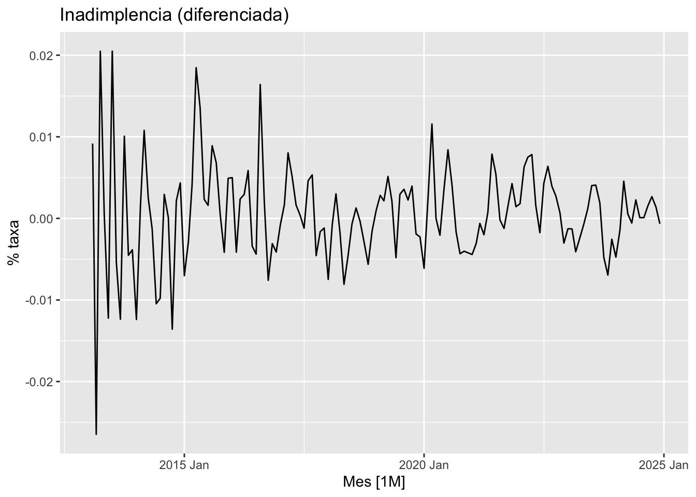
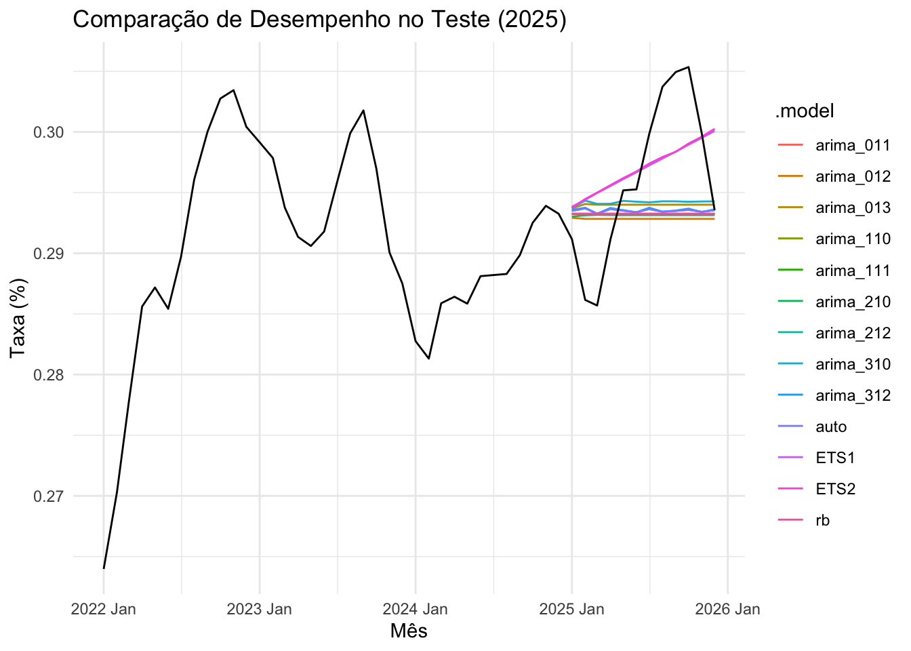

Análise de Séries Temporais com Modelo ARIMA
Inadimplência do Consumidor (PEIC)
Introdução
O endividamento e a inadimplência das famílias brasileiras são termômetros cruciais para a saúde econômica do país. Altos índices de inadimplência reduzem o poder de compra, retraem o varejo e aumentam o risco de crédito para as instituições financeiras.
Utilizamos dados históricos da Pesquisa de Endividamento e Inadimplência do Consumidor (PEIC) para construir um modelo preditivo baseado em Séries Temporais. Através da modelagem, é possível extrair a tendência histórica e projetar o comportamento futuro da inadimplência, permitindo tomadas de decisão baseadas em dados para o ano de 2026.
Análise Exploratória
Nesta etapa inicial, importamos os dados mensais da PEIC (de 2013 a 2025) e analisamos visualmente as principais características da série.
Comportamento da Série
A série possui, forte presença de tendência e visualmente uma ausência de sazonalidade.
Análise da série

A série apresenta tendência ao longo do tempo. ACF apresenta decaimento leve, forte autocorrelação (não estacionária). PACF com um pico relevante no lag 1 , sugerindo componente AR(1).
Teste de estacionariedade na série original
Aplicamos o teste KPSS para verificar se a série é estacionária.
| kpss_stat | kpss_pvalue |
|---|---|
| 2.669534 | 0.01 |
Um p-valor menor que 0.05 indica que a série é não estacionária.
Separação treino e teste
Para treinar os modelos, separamos os dados até o final de 2024 para treino e isolamos o ano de 2025 para teste.
Série diferenciada

Série diferenciada, oscila em torno de zero sem tendência clara. Indicando uma possível estacionaridade.
ACF e PACF da série Diferenciada

Ao analisarmos o gráfico da ACF, observamos que, após dois lags iniciais de menor expressão, o lag 3 apresenta uma significância acentuada ao romper a banda de confiança, sugerindo a utilização de um componente de Média Móvel \(MA(3)\).
Na PACF há picos nos lags 3 e 5, o que pode indicar componentes autorregressivos, AR(3).
Teste de estacionariedade
Um novo teste KPSS foi aplicado para verificar se a série é estacionária.
| kpss_stat | kpss_pvalue |
|---|---|
| 0.0541437 | 0.1 |
O novo teste KPSS confirma que, após a diferença, a série tornou-se estacionária (p-valor > 0.05).
Ajuste de modelos
Para definir o algoritmo preditivo mais aderente à série, estruturamos uma avaliação comparativa entre múltiplas parametrizações do ARIMA e os modelos clássicos de Suavização Exponencial (ETS).
Modelo automático
# A mable: 1 x 1
auto
<model>
1 <ARIMA(2,1,2)>O modelo automático selecionado foi um ARIMA(2,1,2), indicando dois termos autorregressivos e dois de média móvel.
Desempenho dos modelos
# A tibble: 13 × 11
.model sigma2 log_lik AIC AICc BIC ar_roots ma_roots MSE
<chr> <dbl> <dbl> <dbl> <dbl> <dbl> <list> <list> <dbl>
1 arima_310 0.0000355 531. -1054. -1054. -1042. <cpl [3]> <cpl [0]> NA
2 arima_013 0.0000324 537. -1066. -1066. -1054. <cpl [0]> <cpl [3]> NA
3 arima_312 0.0000293 545. -1078. -1077. -1060. <cpl [3]> <cpl [2]> NA
4 arima_210 0.0000381 526. -1045. -1045. -1036. <cpl [2]> <cpl [0]> NA
5 arima_012 0.0000348 532. -1057. -1057. -1048. <cpl [0]> <cpl [2]> NA
6 arima_212 0.0000294 544. -1079. -1078. -1064. <cpl [2]> <cpl [2]> NA
7 arima_110 0.0000387 524. -1044. -1044. -1038. <cpl [1]> <cpl [0]> NA
8 arima_011 0.0000387 524. -1044. -1044. -1038. <cpl [0]> <cpl [1]> NA
9 arima_111 0.0000351 531. -1056. -1056. -1047. <cpl [1]> <cpl [1]> NA
10 rb 0.0000384 524. -1046. -1046. -1043. <cpl [0]> <cpl [0]> NA
11 auto 0.0000294 544. -1079. -1078. -1064. <cpl [2]> <cpl [2]> NA
12 ETS1 0.0000389 375. -741. -740. -726. <NULL> <NULL> 3.78e-5
13 ETS2 0.0000390 375. -740. -740. -725. <NULL> <NULL> 3.79e-5
# ℹ 2 more variables: AMSE <dbl>, MAE <dbl>O AICc do modelo ARIMA(2,1,2) é o menor entre os candidatos, indicando que ele apresenta o melhor equilíbrio entre ajuste da série e complexidade do modelo.
Análise Visual da Previsão (ano 2025)
G ráfico com todos os modelos prevendo o ano de 2025.

Nenhum modelo acompanha perfeitamente os picos e quedas dos dados reais. Os modelos ETS capturam uma leve tendência de crescimento.
Tabela de Acurácia
| .model | RMSE | MAPE |
|---|---|---|
| ETS2 | 0.0054277 | 1.562553 |
| ETS1 | 0.0054182 | 1.563326 |
| arima_310 | 0.0067351 | 1.880607 |
| arima_013 | 0.0068382 | 1.910004 |
| arima_212 | 0.0070022 | 1.948824 |
| auto | 0.0070022 | 1.948824 |
| arima_312 | 0.0069865 | 1.949167 |
| arima_011 | 0.0070955 | 1.971912 |
| arima_110 | 0.0070956 | 1.971941 |
| rb | 0.0070959 | 1.972019 |
| arima_111 | 0.0070978 | 1.972497 |
| arima_210 | 0.0071350 | 1.980093 |
| arima_012 | 0.0072702 | 2.019684 |
O ETS2 apresenta o melhor desempenho (menores erros), seguido pelo ETS1. O melhor ARIMA é o arima_310, mas ainda com erro maior que os modelos ETS. De modo geral, os modelos ETS continuam sendo os mais precisos, superando os modelos ARIMA.
Previsão Final
o modelo (ETS2) foi treinado com 100% da base histórica para projetar o ano de 2026.

O modelo ETS projeta uma leve tendência de crescimento ao longo de 2026. A taxa deve permanecer próxima de 30%, com pequenas variações.
Considerações Finais
O presente trabalho teve como objetivo modelar e prever a Taxa de Inadimplência do Consumidor (PEIC). Após a avaliação e competição entre os modelos ARIMA e de Suavização Exponencial (ETS), o modelo ETS(A,M,N) obteve o melhor desempenho preditivo, apresentando o menor erro (MAPE de 1,55%) na base de teste.
A adequação da tendência multiplicativa no modelo vencedor indica que a inadimplência na série estudada possui um crescimento acelerado, característico do acúmulo de juros.
Conclui-se que o modelo ETS(A,M,N) escolhido se mostrou estatisticamente robusto para projetar o cenário de 2026, oferecendo uma estimativa confiável que pode ser utilizada por instituições para o planejamento e ajuste de políticas de concessão de crédito.